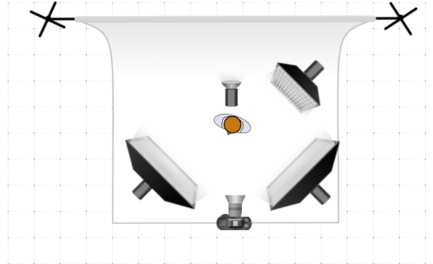

Part 2
In this second part of our guide you will learn about the essential steps required to shoot educational videos.
Step 1 - Set Up Your Scene
The first thing to do is to set up your scene, place your camera on a tripod, and compose the shot.
Here you face your first decision. You will need to choose what to include in your frame. This will dictate what focal length to use (i.e., what lens) as well as how far to place the camera. Ideally, you should strike a balance between a boring shot and one that is too distracting.
A close up shot of your face (also called a “talking head” shot) is ideal when stressing an important message. You remove any distraction from the background and the audience focuses solely on you and your speech. But long shots like this may become boring after a while. This is why we suggest to compose your shot a bit wider, showing more of the background. Indeed, the background should not be messy, too crowded or distracting. However, if you choose to shoot at a wider angle, you could always “zoom in” digitally on your face when needed, in post-production (i.e., cropping your footage).
We suggest you to sit comfortably at your desk and have some props on it to show and engage your audience with. It’s also a good idea to avoid dark and plain backgrounds. Show something relevant behind you. For instance, if you’re a data scientist, you could have a PC running behind you and some screens showing with what you usually work on.
When composing your frame, leave some “room” above your head, but not too much.
Step 2 - Light Up Your Scene
In this section, we will assume that you’re relying on artificial lighting.
How many light sources do you need? We did not address this question in the first part of the guide. That’s because it really depends on your budget. You can achieve some good results with just two or three lights, and we will show some light schemes for the most common configurations.
But why would you need more than one light? That’s because distinct light sources can have different functions.
- A key light (or main light) is usually the most important one in the scene. It highlights the main subject in the frame from the front. It’s usually placed at a 30–60° angle (if the camera and the subject are marked at 0°) and it’s the most intense one. If you have only one artificial light source, you will use it as a key light. If you don’t include a key light in your shot, you get a silhouette effect.
- A fill light is meant to “fill in” the shadows of the subject casted from the key light. It’s usually less powerful than the key. If the two sources outputted the same intensity of light and were placed at the same distance from the subject, you would basically get two key lights, resulting in a flatter and more artificial-looking image. In fact, the point of having a fill light is to attenuate shadows, not remove them entirely. Often, having one side of a face brighter than the other one is very pleasing and closer to what naturally happens in the world. This intensity difference with the key light also helps in sculpting a more 3D look on the subject.
- A rim light helps to separate the subject from the background. This light is placed behind the subject, usually towards the camera (but not visible in the frame). It creates a glow around the edges of the subject and makes him/her stand out more.
- A background light is used to illuminate what’s behind the subject. It’s usually the one at the lowest intensity. It can also be set to different colors to create color-contrast in the scene and give a more modern and interesting look.
Lastly, let’s talk about practical lights. Practicals are sources that are clearly visible as models in your scene, like lamps and light fixtures, but also anything else that emits or reflects light, like the moon, televisions, vehicle headlights, buildings, and so on. As we said before, it’s not a good idea to use those as your key light. However, they are great to set the tone and give credibility to your scene and light scheme!
Your ultimate goal when placing your artificial lights is to create a natural-looking effect. That’s why photographers and cinematographers often talk about motivated lighting. They seek a motivation on where to place the lights sources. In other words, motivated lighting is used to imitate natural (existing) light within a scene, like lamps or windows, basically by enhancing and replicating practicals. For instance, if you have a window in your shot but the light coming from the outside is not enough, you could place your key light in a position that mimics the exterior light coming through the window. In this way, you will get a pleasant and natural-looking result because you are enhancing the pre-existing light.
One Light Setup
If you only have one light source, use it as your key light to illuminate your subject’s face. Place it at a 30–60° angle from the subject and the camera, slightly above the head and pointing down towards it.
To reduce the contrast in your scene you might need a fill light. No worries if you don’t have a second light source. You could use any reflective white surface to bounce off the key light from the other side of the subject and “fill in” those shadows. You could buy a 5-in-1 reflector for this purpose, or just use a white foam board.
Don’t forget about the background! Use practical lights from your house to make it more interesting and not leave it too dark.

Two Light Setup
This setup is very similar to the first one. Use your second light source as a fill light. Having a separate source instead of using a reflector enables you to control how much contrast you want between the bright side and the shadow side of the face, or the lighting ratio between your key light and fill light. This allows you to achieve many different styles and moods.

Three Light Setup
Add a third source as a background light. If you happen to have practicals in your background, remember to use motivated lighting when placing your artificial source. Generally speaking, the background should always be a bit darker than the subject. This helps the audience to concentrate on the speaker. Use practicals such as lamps, bulbs or similar to create a nice bokeh in the background if you use a shallow depth of field.
You can also get creative with your background light. Since it’s not illuminating the subject, you could play with colors to set the mood in your scene. Use a RGB light source or a white one with some color gels on it. Usually, you will see some cold colors in the background, like blue or teal. This is done to increase the color contrast in the scene, which makes it visually more balanced and pleasing. Contrasting colors means using complementary colors, those from opposing segments of the color wheel. The foreground will be mostly warm and orange because of the subject’s skin tone, so it’s a good idea to have a colder background color.

Four Light Setup
Lastly, you could add a fourth source as a rim light to separate the subject from the background. This is meant to light up the subject’s hair. It’s generally placed above the head, angled down and slightly forward to strike the top of the head and shoulders. Usually, it’s on one side but it can also be placed directly behind the subject (you will need a C-stand with a boom arm for this, otherwise you’ll see the light stand in your shot).

Camera and Audio Settings
For the sake of brevity, we won’t explain a lot about the following camera settings. If you are already comfortable with setting your camera exposure, depth of field, focus and video options, skip this part and adjust to taste. If you are new to these topics, you can learn more about them here.
Anyway, the following are our recommended settings, but notice that they should be adapted case by case.
Video
You will record footage directly on your camera storage option (probably an SD card), not to a PC. Make sure you have a fast SD card (class 10) to handle the large video files.
- Set your camera in manual (M) mode. This allows you to manually control all the settings.
- Enter the live view and/or video mode on your camera.
- Set your video quality and settings: full HD (1920 x 1080px) at 25fps, use a flat or neutral picture profile and make sure the internal microphone is on and working properly (even if you’re going to use an external microphone). Leave your white balance set to auto. If you see from the preview that your colors are off (there’s an orange or blue color cast), set your white balance to 5500K (or match your light’s color temperature).
- After having turned on all of your lights, set the exposure on your camera. Use a shutter speed of 1/50th of a second (shutter speed = 1 / fps * 2). Set your aperture quite wide open (use a small f-number) for a shallow depth of field and an out-of-focus background. Lastly, adjust the ISO setting until your exposure meter is set to 0 (the picture is correctly exposed).
- Unless you own a modern, high-end expensive camera and a lens with ultrasonic quiet focusing, you need to turn OFF the autofocus on your camera. Entry-level autofocus system are not really meant for videos, especially on still (photographic) cameras. You might end up with unusable footage because the camera continuously refocused while shooting. Use manual focus instead (you will need a second person to focus for you while you’re in the shot, if the camera is placed far away). Of course, this will only works if you will be standing still and won’t move much while recording.
Notice that if you are going to use the same set and lighting options, you won’t need to repeat all of these steps each time you will be recording. As long as you are not changing the lighting output or the distance between the sources and the subject, you won’t need to set your exposure again from scratch.
Audio
You will record your audio directly into your PC. We recommend recording at a sample rate of 44.1 kHz and on a WAV file type.
- Connect your microphone to the first input of your audio interface.
- Turn on and connect your audio interface via USB to your PC.
- If you’re using a condenser microphone without batteries, turn on phantom power.
- Launch a recording software on your PC. We suggest Audacity or any DAW like Logic Pro X or Cubase.
- Create a mono audio track with the first input from your audio interface.
- Set the appropriate gain level for your microphone, without clipping.
- Enable the track for recording (R).
- Disable the track monitoring. You do not want to hear yourself talking while you are recording.
Recording
Finally, you can start recording. But before you start your presentation, there’s one last essential step that you should take that will save you a lot of time in the editing process.
- Start recording your audio from Audacity or your DAW of choice.
- Press record on your camera.
- Clap your hands, loudly. Make sure they are in-focus and clearly visible in your shot. This will act as a (cheap) clapperboard.
- You can start your speech.
Editing
Once you are done with your presentation, you can stop both the recording.
You will now need some editing software to combine the audio and the footage you’ve just shot, as well as to cut down unnecessary bits, color correct your footage, add titles, logos, and export the final file. We suggest Adobe Premiere Pro on Windows and Final Cut Pro or iMovie (which is free) on MacOS. DaVinci Resolve is a free yet equally powerful and professional cross-platform alternative.
- Start by importing your footage and audio (WAV) file.
- Create a new project and timeline with the same settings as the original footage: 1920 x 1080px at 25fps.
- Drag and drop your video and audio files on the timeline.
- You will now need to sync the video and the audio track: remember, you did not start recording exactly at the same time. You should be seeing three tracks on your timeline: two from the video file (one for the footage and one for the audio recorded by the camera’s built-in microphone) and one from your external microphone (WAV file). Most editing software show audio waveforms for audio tracks. You will need to move either the video or the audio track to match the moment you clapped at the beginning. You can either match the external microphone waveform to the one of the built-in microphone (if the clap was loud enough to be captured by the latter too), or visually to the actual footage. Most editing software allow for automatic syncing too: check this article for Premiere Pro and this one for Final Cut Pro.
- Link all of your tracks together, so that they will move all at once from now on and won’t get out of sync.
- Cut your footage according to your need. You can also add new “levels” on your timeline for titles, logos, and animations.
- Render and export the final video file. Set the resolution to the same as the source video (1920 x 1080px) and the video codec to H.264.
That’s all! You successfully managed to set up, record, and export your educational video.
Alternative Way: Record Audio and Video Together
If you don’t want to spend time syncing your video and audio track in post-production, an alternative way is to record using OBS.
OBS is a free and open source software for live streaming that also allows video (and audio) recording. Besides recording your screen, you may also record external video sources, like a webcam stream.
However, if you’re looking for a better image quality, you may also use your DSLR as a webcam. In order to do so, you will need some extra hardware that converts your camera’s HDMI output into a USB input, like the Elgato Cam Link.
Next Page